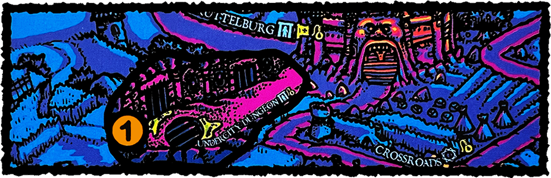

LOOT & PILLAGE
SETUP
Place the Undercity Dungeon overlay on the board connected to Brüttelburg. This represents an additional location in the Lowlands. The Undercity Dungeon is adjacent to Brüttelburg.

Set the Bounty Level at 2 & place the party in the Undercity Dungeon.
Fresh out of the dungeon without two coins to rub together, you know you'll need to come up with some funds as soon as possible. Luckily you have two leads on potential fortunes ripe for the taking. A new cellmate recently boasted to you about a treasure he stole & sold to the River Rats gang, now housed at the old Watchtower & barely guarded... unless it's already been shifted to the Bandit Camp.
You've also heard rumors of the tomb of the Dread Saint Pastete - where tributes are left by pilgrims from across the Würstreich - unprotected wealth just waiting to be taken! Unfortunately, some of the rumors disagree on specifics: you've heard that the tomb is beneath the ruin at Tower Island; once part of the necropolis during the Dread Saint's time - or perhaps his body has been moved to the Catacombs.
Ġ Bandit Camp
Ġ The Catacombs
Ġ Tower Island
Ġ The Watchtower
ĝ Howling Winds/Treasure Trove (Highlands Encounter)
ĝ Travelling Carnival/Unspoiled Tomb (Lowlands Encounter)
OBJECTIVE
At least one adventurer must complete any one of the following, then Rest at any Town Ę.
- Destroy a Caravan in the Highlands.
- Plunder a Treasure Trove in the Highlands.
- Plunder the Unspoiled Tomb in the Lowlands or Wetlands.
THE MANHUNT
The authorities send troops to patrol the streets of Brüttelburg & the towns of the Lowlands in search of escaped convicts.
At the start of each Danger Phase, increase the Bounty Level if any adventurer Rested in Bold č stance at a Town Ę in the Lowlands during that turn.
If the Bounty Level is increased to 3 or more, place a Law ĩ counter on the Fishmonger Camp & on North Bridge.
RUMORED RICHES
If you successfully Explore ġ a space with a Clue Ġ counter, you may flip that counter & compare the highest single die result of your Explore Test to the Clue's Ġ value.
If your highest die is equal to or greater than the counter's value, you may take a specific card from the Mission ĝ deck based on your location & resolve it during the Encounter phase (do not resolve a random Encounter Ĥ this turn). Then, remove the clue Ġ counter from your space & place the Encounter in its discard pile.
Ġ Bandit Camp: resolve ĝ Treasure Trove
Ġ The Watchtower: resolve ĝ Treasure Trove
Ġ The Catacombs: resolve ĝ Unspoiled Tomb
Ġ Tower Island: resolve ĝ Unspoiled Tomb
REWARD
Each adventurer gains 1 Luck Ğ & remove any Law ĩ counters that were placed due to 'the manhunt'. If ou destroyed a Caravan, increase the Danger Level in the Foothills & at Pigskin Port.
MISSION PATH
Your mission path is based on which objective you completed:
You destroyed a Caravan or plundered a Treasure Trove
Thanks to you, commerce has been destablized in the region & the Merchant Guilds are eager to hire new mercenaries brave enough to travel far into the Wasteland to establish trade with the Goblins & the people of Gutfish Ford.
What will you do ?
Enlist with the Guildsmen
The Guildsmen hire you as a guard or scout for their İCaravan Through the Badlands.
Decline the guild's offer
You begin looking for work on the seedy side of town. Local bandit gangs have taken note of your exploits & they send goons carrying an ultimatum; work for them or get out of town!
If you take work from the River Rats, it's time to try your hand at İDeath For Hire. If you refuse to work for the gang, increase the Danger Level at the Bandit Camp.
You plundered the Unspoiled Tomb
There are one on more Puritans in the party
Too late you realize your disastrous mistake! You've defiled the resting place of the Dread Saint Pastete & disturbed sacred remains of occult importance to the Inquisition. You must rush to undo the damage you've caused & break the İCurse of the Dread Saint!
You may choose to ignore the curse of Saint Pastete. In that case, increase the Danger Level at the Catacombs & Tomb Lake, then read the following :
Your heist earns you a reputation in the local underworld & soon enough you're approached by a thin, jumpy apothecary who hopes to find some rare ingredients for his work... Will you collect the components he needs to İMake a Scratch?
There are no Puritans in the party
Increase the Danger Level at the Catacombs & Tomb Lake.
Your heist earns you a reputation in the local underworld & soon enough you're approached by a thin, jumpy apothecary who hopes to find some rare ingredients for his work... Will you collect the components he needs to İMake a Scratch?
Alternatively, there may be some possibilities for you depending on your location:
You are in the Badlands
[Missions II] Rather than set up in a Settlement, having your hide out at the remote Last Chance will make tracking you down that much harder & starting a criminal career that much easier... But first you'll have to deal with İThe Black Bats.
You are in the Highlands
[Missions III] As newcomers to the Highlands, a once in a lifetime opportunity presents itself... Will you İTake a powder?
You are in the Lowlands
You are approached by a shady looking individual who says that if you travel to a certain Location in Brüttelburg, your violent tendencies can be put to a higher purpose...
[Missions II] Travel to Brüttelburg to start your career as a İBomber.
If you wish, you may ignore these opportunities & instead attempt to İEstablish a Base somewhere beyond the Lowlands.